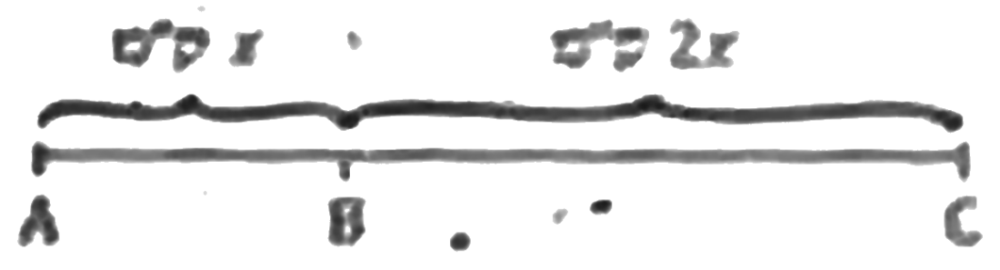
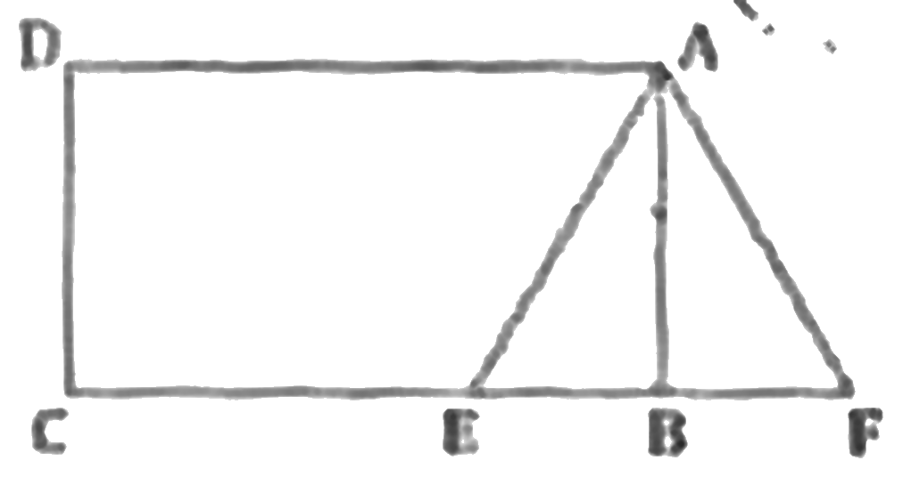

בסרטוט שלפניכם מעגל בו הועברו 4 מיתרים.
נתון: שטח המשולש DEC גדול פי 43 משטח משולש AEB. AE = 6 ס"מ.
לאור נתונים אלו ונתוני הסרטוט, מה אורכה של הצלע DE (בס"מ)?
x ≠ ±√5 , 1√5 + x + 1√5 − x = ?
נתון: |x| = |x − 4| , |y| = |y + 3|
x − y = ?
המרחק בין A ל־B הוא x ק"מ, והמרחק בין B ל־C הוא 2x ק"מ.
איתן רץ מ־A ל־B במהירות של 10 קמ"ש. לאחר מכן המשיך ללא הפסקה ל־C במהירות של 5 קמ"ש. זמן הריצה הכולל של איתן היה שעה וחצי.
כמה זמן נמשכה ריצתו של איתן מ־A ל־B?

a ו־b הם מספרים ראשוניים. נתון: a·b·(a·b − 7) = 120
a + b = ?
A ו־B הן אותיות המייצגות מספרים עוקבים מ־1 עד 9. נתון: B < A
ABB − BBA = ?

בסרטוט שלפניכם ABCD מלבן ו־AEF משולש שווה צלעות.
נתון: BE = ⅓AD
על פי נתונים אלו ונתוני הסרטוט, שטח משולש AEFשטח מלבן ABCD = ?
משקלה הממוצע של סלסלת עגבניות שרי בסופרמרקט הוא 1.25 ק"ג. אראל בדק רבע מהסלסלות וגילה כי משקלן הממוצע הוא 1.22 ק"ג.
מה משקלן הממוצע של שאר סלסלות עגבניות השרי בסופרמרקט?
x הוא מספר טבעי המתחלק ב־6 עם שארית 4. y הוא מספר טבעי המתחלק ב־6 עם שארית 3.
איזה מהביטויים הבאים מתחלק ב־6 ללא שארית?
⚠ עמודים 26–31 דילגו בסרטון (גללת מהר): חסרות שאלה 10 של מקבץ 5, כל מקבץ 6, ושאלות 1–3 של מקבץ 7.